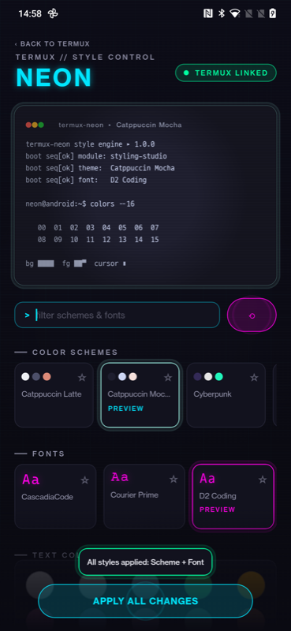
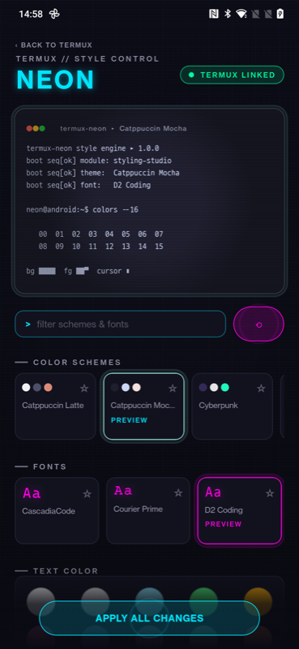
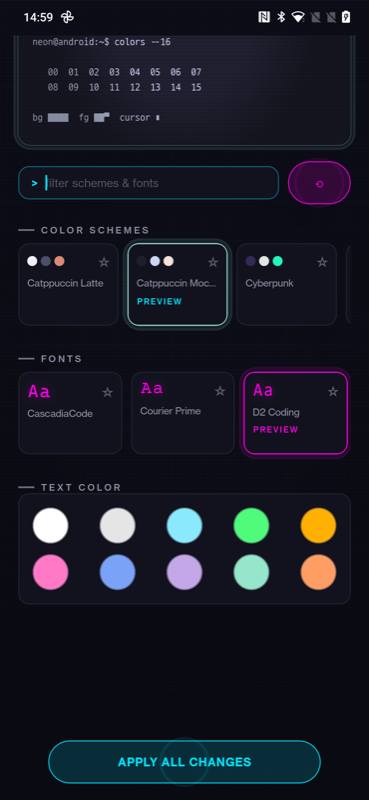

Customize Termux's terminal color scheme and font, with a live preview and one-tap apply that hot-reloads the running session — no restart.



Matches how the original termux-styling add-on is distributed. F-Droid builds and signs the whole Termux app family itself, so the signature always matches an F-Droid-installed Termux.
Signed with an untrusted debug key — only installs next to a self-built, debug-signed Termux. Not for most users. See the README for details.
./gradlew :app:assembleDebug then adb install app/build/outputs/apk/debug/app-debug.apk